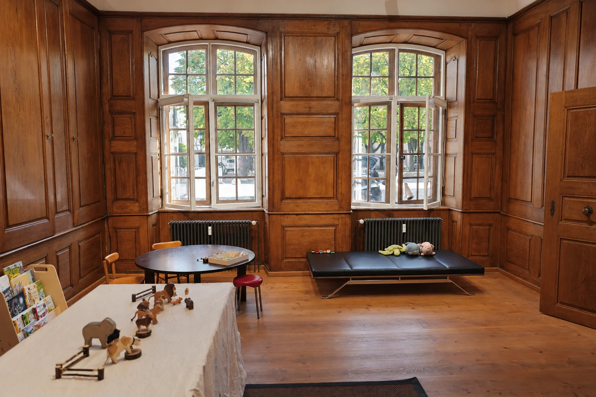
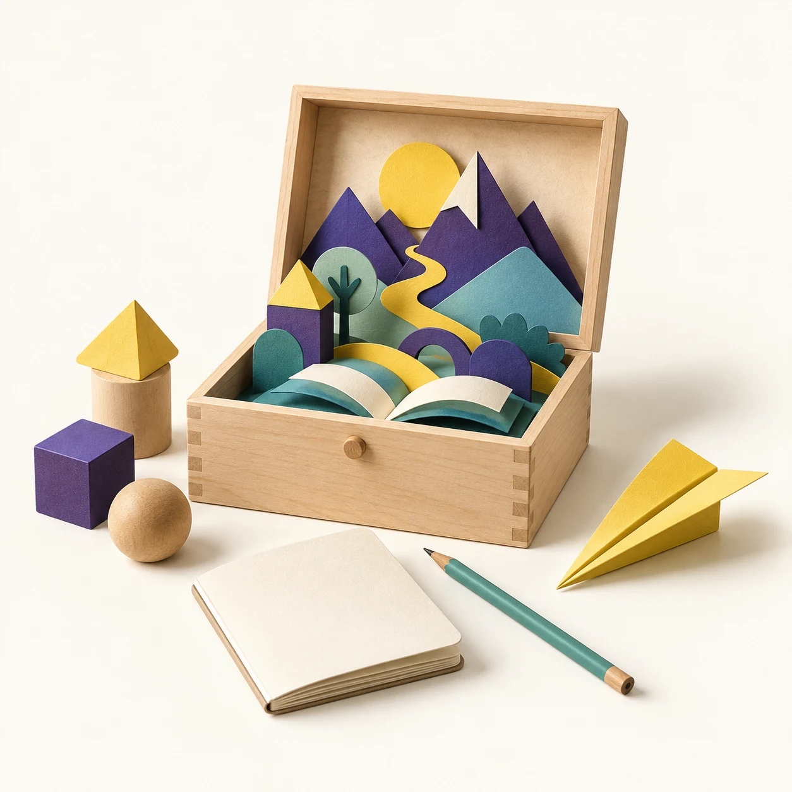
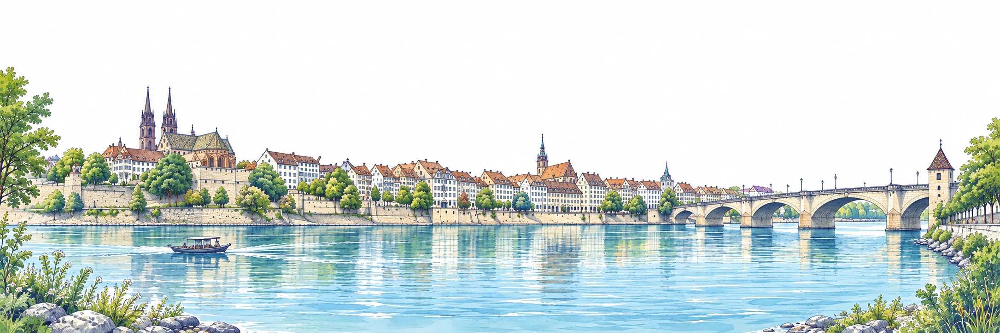

Neue PISA-Resultate
Was die Zahlen für die Schweiz zeigen.
Mathematik, Schweiz
0Punkte
OECD-Durchschnitt: 463
Nur drei OECD-Länder schneiden besser ab.
Quellen: OECD, PISA 2025; SBFI/EDK, 8.9.2026
Lesekompetenz Schweiz, in PISA-Punkten
Quelle: OECD, PISA 2015, 2018, 2022 und 2025
0
Punkte beim Lesen seit 2015
Nach einer Faustregel der OECD entsprechen rund 20 Punkte einem Schuljahr.
Auch in Mathematik: minus 22 Punkte,
von 521 auf 499.
Quelle: OECD, PISA 2025 (Band I); eigene Darstellung
Lesekompetenz 2015 und 2025, in PISA-Punkten
Im OECD-Durchschnitt:
minus 28 Punkte.
Quellen: OECD, PISA 2025, Ländernotizen; SBFI/EDK; IQS (Österreich)
um die Hauptaussage eines mittellangen Textes selbstständig zu erfassen.
Bei den Knaben: 34,2 %
Quellen: PISA 2025, Ergebnisse Schweiz (SBFI/EDK); SRF, 8.9.2026. Leseschwach = unter Kompetenzniveau 2.
Laut OECD gehen schwächere Leseleistungen einher mit:
mehr Bildschirmzeit
weniger Lesen zum Vergnügen
mehr «hastigem Lesen»
Texte überfliegen, schnell falsch antworten
Und: Jugendliche in der Schweiz nutzen KI für die Schule häufiger als im OECD-Durchschnitt.
Quellen: OECD, Mathias Cormann, 8.9.2026; SBFI/EDK, 8.9.2026

Es beginnt mit Sprache:
mit Gesprächen, Geschichten
und Fragen.
Und mit einem Gegenüber, das zuhört.
Lernbus, Münsterplatz 17, Basel
Lerngesellschaft
Basel
Neugier begleiten.
Möglichkeiten eröffnen.
lerngesellschaft.ch
Gemeinnütziger Verein. Bildungsangebote für Kinder und Schulen in Basel.

Quellen: OECD, PISA 2025 Results (Band I) und Ländernotizen, 8.9.2026 · SBFI/EDK, Medienmitteilung vom 8.9.2026 · SRF, 8.9.2026 · IQS Österreich · Faustregel 20 Punkte pro Schuljahr: OECD.